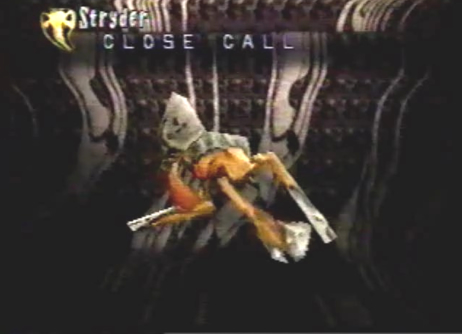
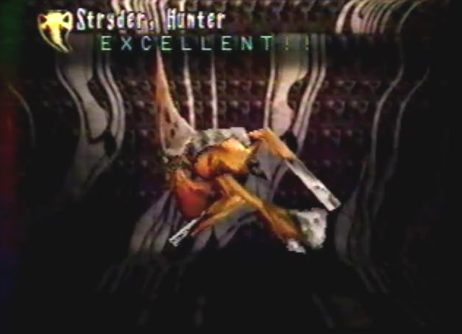

Pludger |
Strategy As we flew over a sand pit, we encountered a large hovering creature. While in front of this creature, we were attacked by the swarm of Nanyds surrounding it. Gash told me to just move and shoot. I had the dragon move to the side of the thing and it attacked us with its claws. We then proceeded to move directly to the back of this creature and found its weak point. The dragon quickly destroyed the swarm of Nanyds with its Holy Sphere berserk attack. Before I could shoot its weak spot with my gun, the creature shot acid phlegm at us! It was nasty! I immediately shot the weak spot with my gun and the creature was no more. |
Divine Enemy Info
Normal/Attack Direction claw/Left and Right Special Pludger/Front Acid Phlegm |
Length 22.5 Ln Height 45.0 Ln Width 18.0 Ln Weight 1875 Kn Dynes 30 Dn Exp Pts 57 EXP Items Macral Liquid Macral Shell |
Hopper |
Strategy While in front of these creatures, we found their weak spots fairly easily. It wasn't so easy to hit their weak spots, because they would constantly turn away and spit gastric bile at us. As the creatures turned, we followed. When in front of them, I shot my gun and they were destroyed in no time. |
Divine Enemy Info
Normal/Attack Direction Gastric Bile/Varies Special None |
Length 27.0 Ln Height 31.5 Ln Width 18.0 Ln Weight 2940 Kn Dynes 14 Dn Exp Pts 21 EXP Items Macral Liquid Macral Shell |
Stryder Scavengers |
Stryder  |
Stryder, Hunter  |
Nanyd
|
Strategy Along with the pack of Stryders, was a swarm of Nanyds. At the start of the battle the whole group of them swarmed past us, hitting the dragon with spines. Immediately after, the Stryders paralyzed the dragon and I had to use a Free Action item to cure him. Once the dragon recovered, he flew behind the group of creatures and used his Holy Sphere berserk attack. They all turned to ash! |